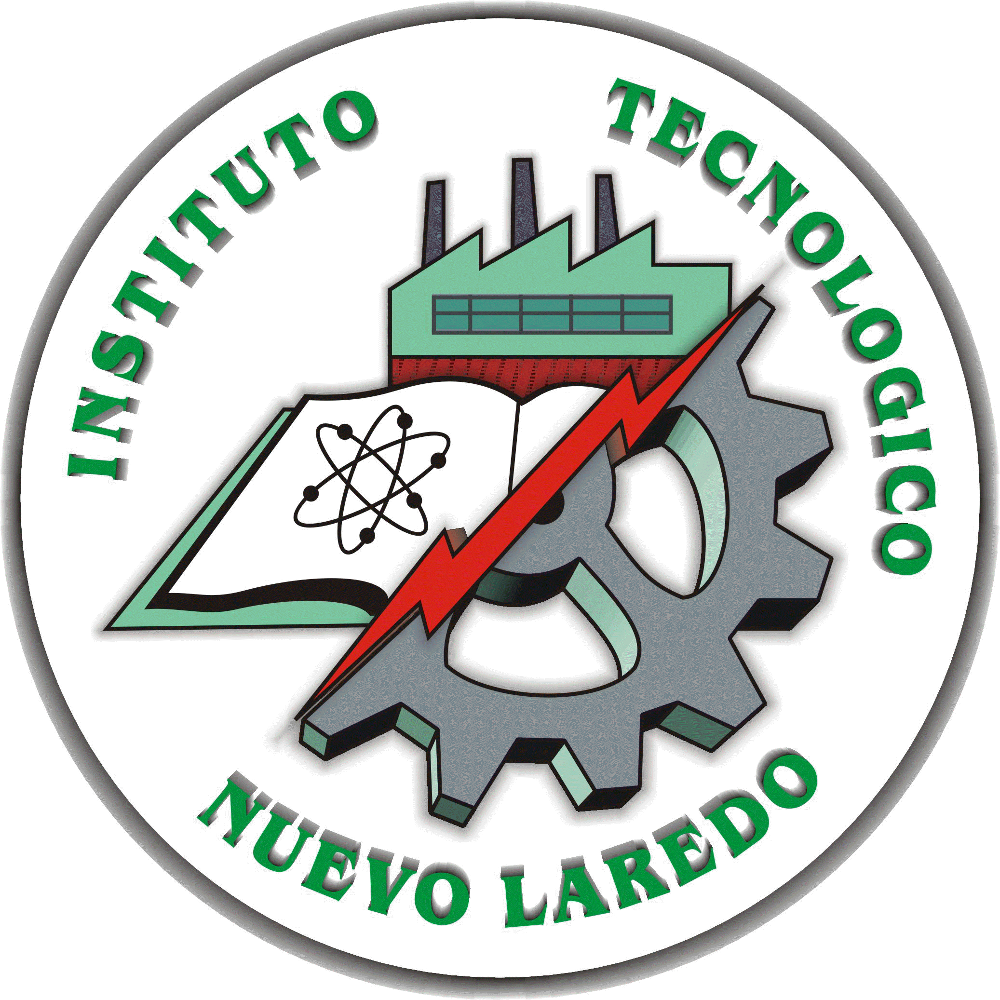

Acerca del Diplomado 4.0 
El diplomado surgio como consecuencia del Programa Nuevo Laredo 4.0 en donde el Centro IST y el Gobierno de Nuevo Laredo impulsaron la capacitación de la industria, academia y comunidad en tecnologías referentes a I4.0.
El 50% de la duración del Diplomado será impartido por maestros del ITNL, impulsando de esta manera el fortalecimiento el conocimiento local, el 50% restante será impartido por Tecnalia (Centro de innovación e investigación del país Vasco, España) mediante MOOC´s o educación a distancia.
El diplomado constara de 5 módulos de 20 horas de trabajo en donde los asistentes aprenderán conocimientos básicos en las siguientes disciplinas básicas en las nuevas tecnologías correspondientes a Industria 4.0:
-
Curso introductorio a lenguaje de programación Python
-
Capacitación en ciberseguridad
-
Capacitación en sistemas interactivos basados en visión para ayuda al operador (realidad aumentada):
-
Capacitación en digitalización, IoT, big data y data analytics:
-
Capacitación en sistemas de visión artificial inteligentes:
-
Sensibilización y capacitación en I4.0 e IoT:
-
Big Data y Celda de Manufactura:
Los objetivos del Diplomado Nuevo Laredo 4.0 serán los siguientes:
- 100 horas de capacitación para alumnos y maestros.
- 30 alumnos beneficiados del ITNL
- 20 alumnos beneficiados de la UTNL
- 10 maestros beneficiados de la UTNL
El Diplomado será destinado a alumnos de las siguientes carreras afines a los conceptos de Industria 4.0:
ITNL: Mecatrónica, Electrónica, Industrial, Sistemas Computacionales y Eléctrica
UTNL: Mecatrónica y Mantenimiento Industrial
"Este diplomado es un esfuerzo del Gobierno de Nuevo Laredo por impulsar la innovación, capacitación y nuevas tecnologías en las universidades de la ciudad por medio del Centro IST de la Secretaria de Desarrollo Económico"